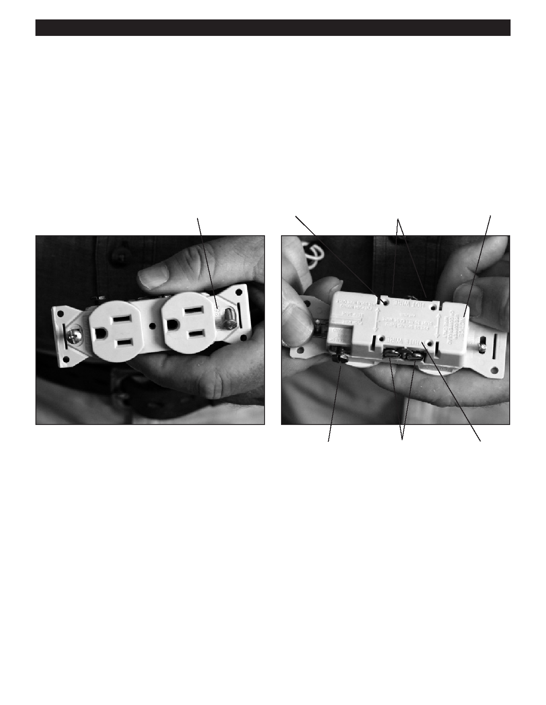

PA RT I C I PA N T R E S O U R C E G U I D E
Receptacles (Continued)
Anatomy of a Receptacle
Receptacles connect to circuit wires with screws or push-in fittings. A connecting tab between the screw terminals allows a
variety of different wiring configurations. Receptacles also include mounting straps for attaching to electrical boxes.
Look at the receptacle for this information:
UL or UND. Lab. INC.: Meets the safety standards of Underwriters Laboratories.
Maximum voltage and amperage ratings.
Wire type: COPPER or CU or CO/ALR.
Wire gauge rating: #12 or #14.
Brass (hot)
Voltage ratings
Push-in fitting
screw terminals
Wire type
Green (grounding)
Silver (neutral)
Wire ratings
screw terminals
screw terminals
Installation Guidelines
For standard installations, choose a receptacle that has a wire gauge rating of #12 or #14.
For wire systems with solid copper wiring, use only receptacles marked COPPER or CU.
For aluminum wiring systems, use only receptacles marked CO/ALR.
For copper coated-aluminum wire, use only receptacles marked CU-CLAD ONLY.
Replacement Guidelines
Two types of receptacles are common in apartment buildings:
Normal voltage: Rated for 110, 115, 120 and 125 volts.
High voltage: Rated for 220, 240 and 250 volts.
If you need to replace a receptacle, be sure to check the amperage rating of the circuit at the main service panel. Get a new
one with the same specifications (i.e., amperage rating, voltage rating, wire gauge rating and wire compatibility rating) as the
old one.
46